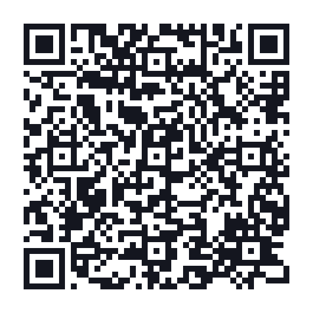

What a vCard QR code is
A vCard is the standard file format phones and email clients use to exchange contact details, the same format behind the “.vcf” attachment you get when someone shares a contact. A vCard QR code packs that file into a scannable image. Point a camera at it and the phone recognises the contact card and offers to save it, with the name, number, email, company and website already filled in.
The practical difference from a paper business card is what happens afterwards. A paper card gets photographed, put in a pocket, and typed up later, if at all. A vCard QR code puts the details in the phone's address book while you are still standing there.

How to build yours
- Fill only the fields you want shared. Every field you add makes the code denser and slightly harder to scan, so leave out what you do not need.
- Write the phone number in international format. Start with the country code (
+1,+44,+92). A number saved without it will not dial correctly from abroad. - Include the full website URL. Write
https://example.com, notexample.com, so phones treat it as a link. - Generate, then scan it yourself. Check the saved contact looks right before it goes on anything printed.
Keep it short. A vCard with five fields produces a clean, easily scanned code. Add a postal address, a job title, a second number and a note, and the pattern gets dense enough to fail on a small print or a low light scan.
vCard QR code vs a paper business card
| Paper card | vCard QR code | |
|---|---|---|
| Gets into the phone | Only if typed up manually | One scan, one tap |
| Cost per contact | Printing cost each time | Free, unlimited |
| Details change | Reprint the batch | Generate a new code |
| Works offline | Yes | Yes, data is in the image |
| Physical presence | Something to hand over | Needs a surface or screen |
In practice, the two work best together: keep the paper card for the handshake, and print the QR code on the back so the details land in the phone without any typing.
Where to put your vCard QR code
On the back of a printed business card
The most common placement, and the most effective. The front stays a normal card; the back carries the code with a short instruction like “Scan to save my details”.
In your email signature
Useful for people who read your email on a laptop with a phone next to them, a quick scan and you are in their contacts. Keep the image around 120 to 150px so it does not dominate the signature.
On an event badge or lanyard
Conferences are where this earns its keep. Instead of exchanging cards with twenty people and losing half of them, attendees scan the badge and move on. Print the code large enough to scan from about arm's length.
On a shop window, van or job site sign
Tradespeople and local services use this so a passerby can save the number instantly instead of trying to remember it. Print it large, a code read from two metres away needs to be substantially bigger than one read from a table.
As a phone wallpaper or lock screen
A zero print option: set the code as your lock screen and let the other person scan your screen directly. It works surprisingly well at informal meetups.
Troubleshooting
The contact saves with the name in the wrong order
The vCard format stores a structured name field separately from the display name. Different phones read these differently, which is why a name occasionally lands in the wrong slot. Entering the full name as you want it displayed gives the most consistent result across devices.
The code is very dense and hard to scan
Too much data. Drop the fields you do not truly need, a postal address in particular adds a lot of characters. Fewer fields means a simpler pattern and a much more reliable scan.
The phone opens a browser instead of saving a contact
That usually means the code was generated as a URL rather than a vCard. Make sure you are using the vCard generator on this page rather than the URL generator.
Special characters look wrong in the saved contact
Semicolons and commas have structural meaning inside the vCard format and must be escaped, which this tool does automatically. If a name contains unusual characters and still looks off on one particular phone, simplify the entry.
What to include, and what to leave out
A vCard QR code is public the moment it is printed. Anyone who sees it can save your details, so treat it like information on a business card rather than private data.
- Worth including: name, company, work phone, work email, website.
- Think twice: personal mobile number if the code will be displayed publicly.
- Leave out: home address, personal email, anything you would not print on a card handed to a stranger.
Nothing you enter here is sent to a server, the code is generated entirely in your browser, as described in our privacy policy.
Frequently asked questions
Do people need an app to scan it?
No. Both iOS and Android read vCard QR codes from the built in camera and offer to create the contact.
Can I edit the contact details later?
Not in an existing code, the data is fixed inside the image. If your number or job changes, generate a new code and replace the old one. This is worth remembering before ordering 500 printed cards.
Does it expire?
No. Because nothing is stored on a server and there is no redirect involved, the code works indefinitely.
Can I track how many people scanned it?
Not with a static vCard code, there is no server in the loop to count scans. Tracking requires a dynamic code that redirects through a service, which is a different (and usually paid) product.
Related tools
If you are putting together materials for a business, a URL QR code pointing at your website or booking page pairs naturally with a vCard. Venues and rentals usually want a WiFi QR code as well, and a text QR code is handy for short printed instructions. The full list lives on our services page, and common questions are answered on the FAQ.
The format itself is documented in the vCard specification, if you want to see exactly which fields are supported.